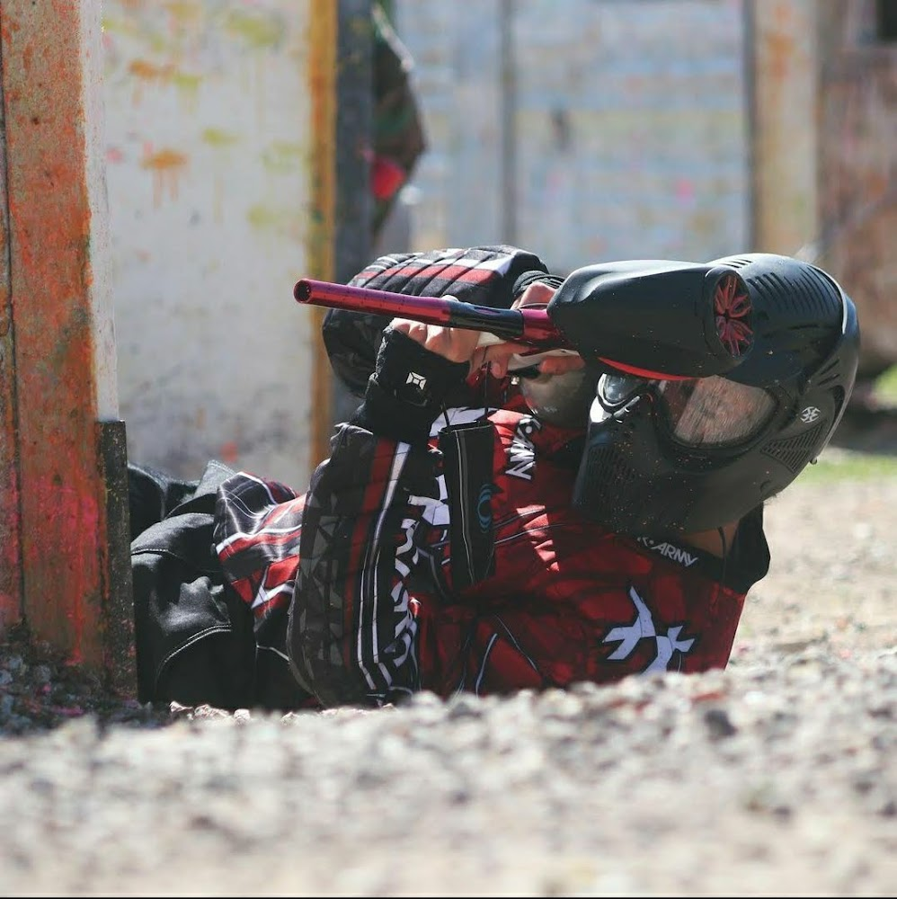
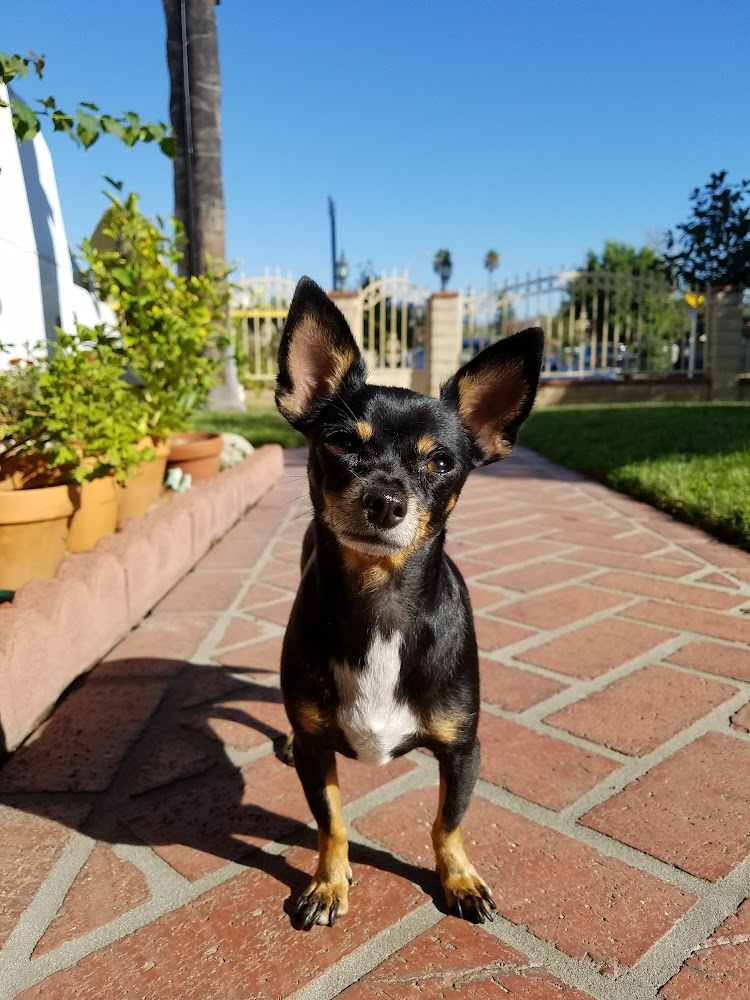
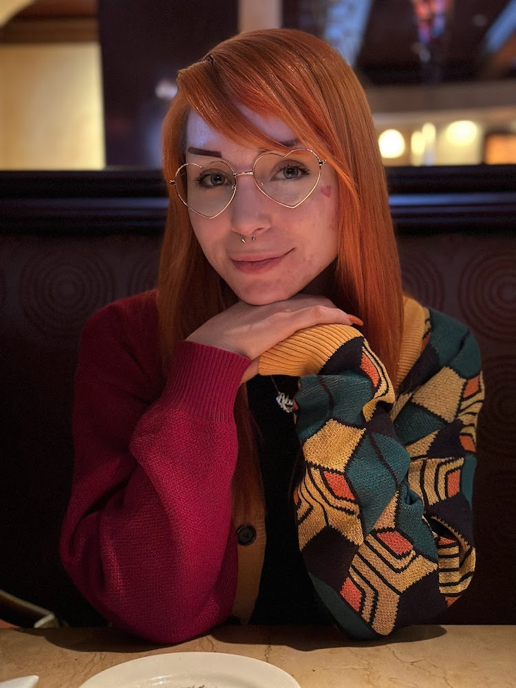
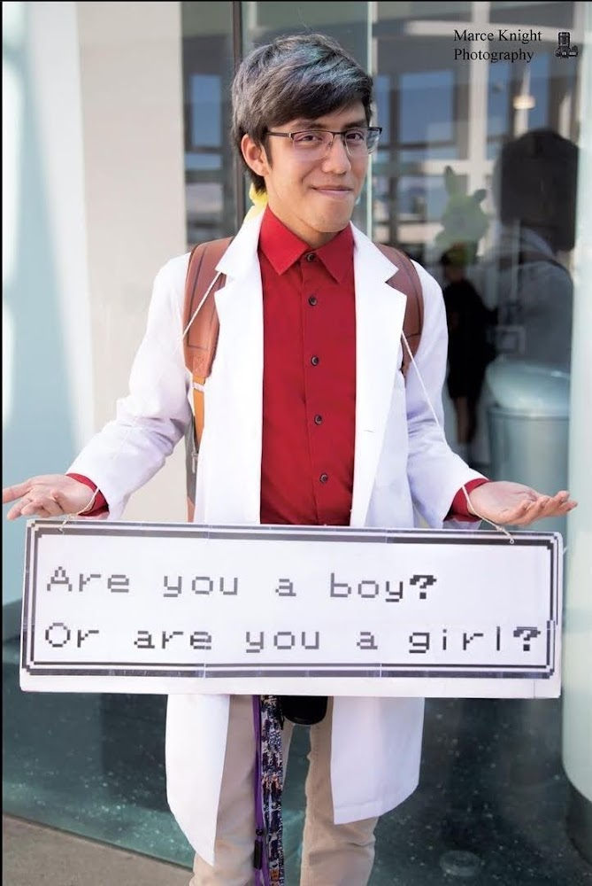
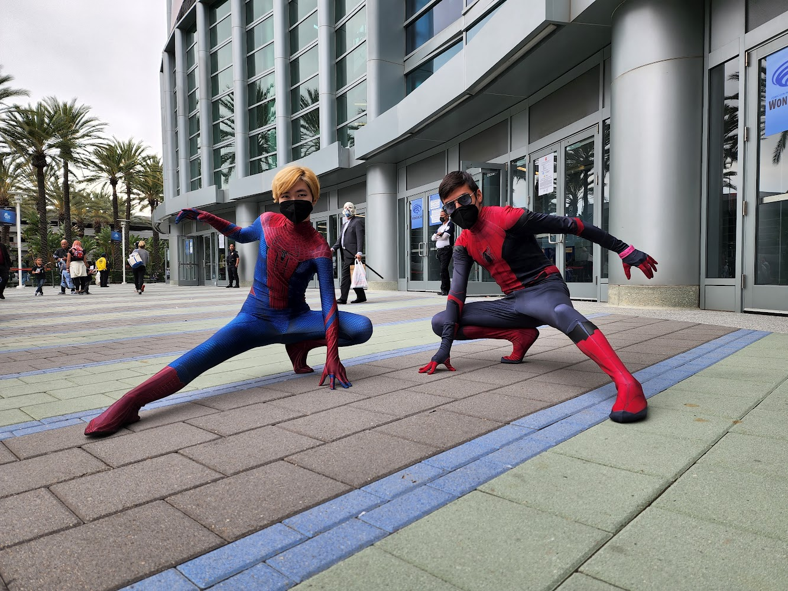
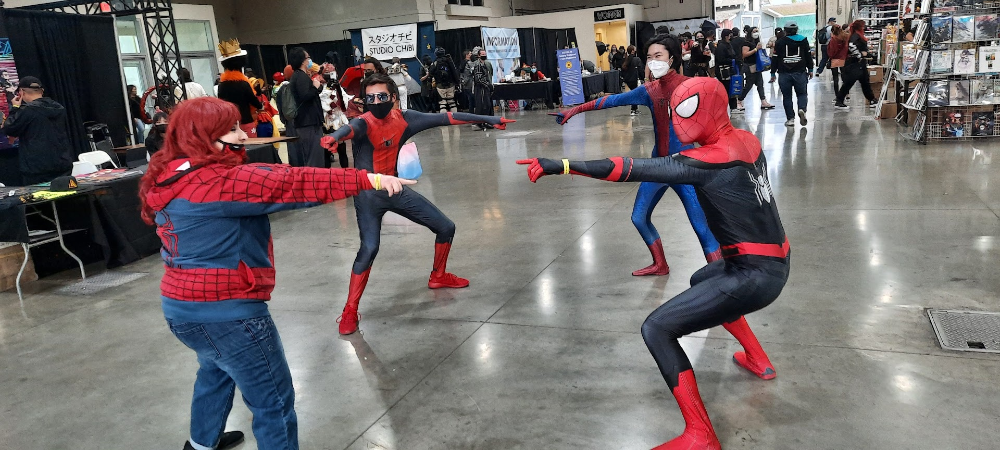

A few of my Hobbies besides coding would be:
Paintball
I love paintball because it's not just a hobby; it's a thrilling and cathartic escape that allows me to relieve stress like no other activity can. The adrenaline rush that courses through my veins when I step onto the paintball field is unparalleled, and the intense, strategic gameplay keeps my mind focused and engaged. Paintball has a unique way of transporting me to another world, where every moment is a blend of excitement and strategy. The camaraderie among fellow players adds a social dimension to the game that enhances the overall experience. Whether I'm diving behind obstacles to avoid a hail of paint or orchestrating a well-coordinated attack with my team, paintball immerses me in a world of excitement and adventure, making it my all-time favorite hobby for stress relief.
Photography
 Photography is my passion, and capturing the world through my lens has always been a source of immense joy and fulfillment. What makes it even more special is my love for photographing cosplayers. There's something truly magical about the artistry and dedication that cosplayers bring to their craft. When I frame them through my camera, I'm not just capturing characters from beloved stories; I'm capturing the essence of creativity, passion, and imagination. The challenge of finding the perfect angle, lighting, and composition to do justice to their intricate costumes and detailed makeup is a gratifying endeavor. Beyond that, the cosplaying community is incredibly welcoming and appreciative, which makes every photoshoot an opportunity to connect with like-minded individuals. Photography, especially in the realm of cosplayers, allows me to blend my artistic expression with my admiration for the boundless world of fantasy and pop culture, making it a deeply enriching and rewarding pursuit.
Cosplay
  Cosplay is my ultimate source of happiness, a realm where I can step into the shoes of my favorite characters and breathe life into their personas. However, nothing quite compares to the exhilaration I feel when I cosplay Professor Oak from Pokemon. The moment I don his iconic lab coat and slip into the role of the wise and affable Pokemon Professor, it's as if I'm transported to the enchanting world of Pokemon. Bringing Professor Oak to life allows me to not only pay homage to a beloved character but also share my passion for the Pokemon universe with fellow enthusiasts. The joy I experience when I see the smiles on the faces of fans, young and old, who recognize and appreciate the effort I've put into my cosplay is simply indescribable. It's a beautiful fusion of nostalgia, creativity, and the chance to immerse myself in a world I've adored since childhood, making Professor Oak cosplay my ultimate source of happiness.